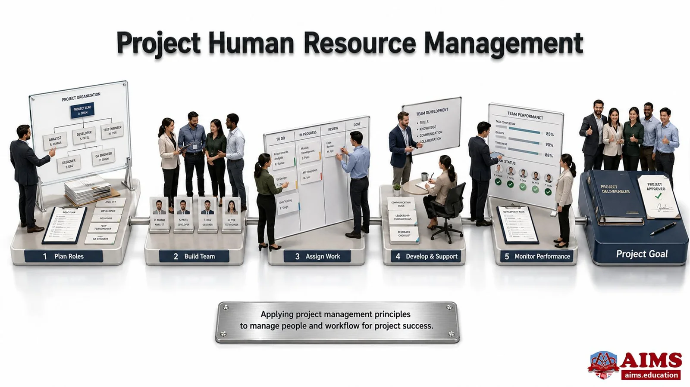
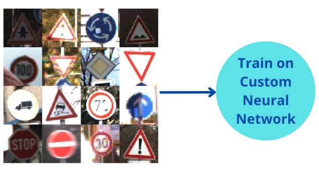

Project 1: "Human Resource Management"

Designed and structured a comprehensive information system for managing organizational personnel records, employee data tracking, department assignments, and administrative workflows efficiently.
Student at Department of Mathematics and Data Science | Photography & Travel Enthusiast
Hello! I am Luong Thuc Tran, currently studying at the Department of Mathematics and Data Science.
I have a great passion for photography and traveling, and I love capturing the breathtaking moments of nature, especially the majestic beauty of the ocean and new destinations.
I am taking the Web Design course to build a solid foundation in HTML structure and user interface design, enabling me to build personal websites to share my travel photography portfolios with the community.
Future Goals: After completing my studies, I aim to combine algorithmic thinking and data analysis from Mathematics and Data Science with Front-end skills to develop optimized web products, while continuing my journey of traveling, photographing, and inspiring others.
Here is a summary of my technical skills and areas of expertise:

Designed and structured a comprehensive information system for managing organizational personnel records, employee data tracking, department assignments, and administrative workflows efficiently.

Implemented a machine learning classification model utilizing the k-Nearest Neighbors (k-NN) algorithm to analyze and recognize various traffic signs based on image dataset features.
Please fill out the form below to send a message or collaborate on upcoming projects: